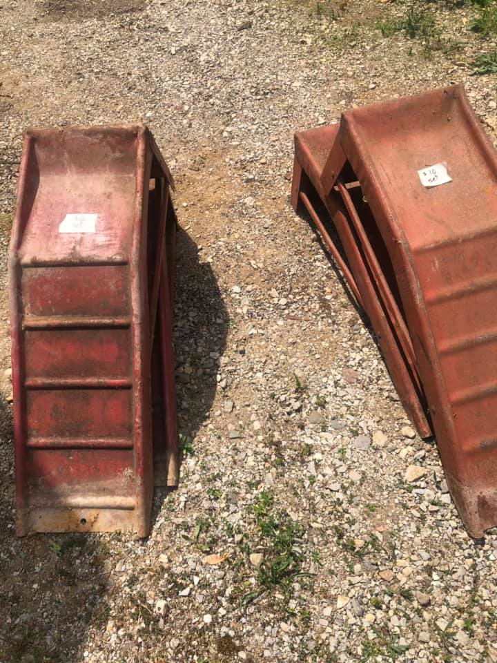

vehicle ramps revision 7648
^ Projects infobox ^^
| image | |
| designers | |
| date | |
| vitamins | |
| materials | |
| transformations | |
| lifecycles | |
| vitamins | |
| materials | |
| transformations | |
| tools | [[wrenches|Wrenches]] |
| parts | [[frames|Frames]], [[nuts|Nuts]], [[bolts|Bolts]] |
| techniques | [[tri_joints|Tri joints]], [[bolting|Bolting]] |
| stl | |
| git | |
Introduction
A car ramp provides a simple method of raising an automobile from the ground in order to access the undercarriage. Utilizing a ramp is reported among the three easiest ways to elevate a car. The remaining two methods include using a jack or jack stands. Car ramps also offer safety for mechanics due to vehicle stability during car maintenance and repairs. Some ramp types can be built at home and hand-made with simple tools.
Challenges
Approaches
